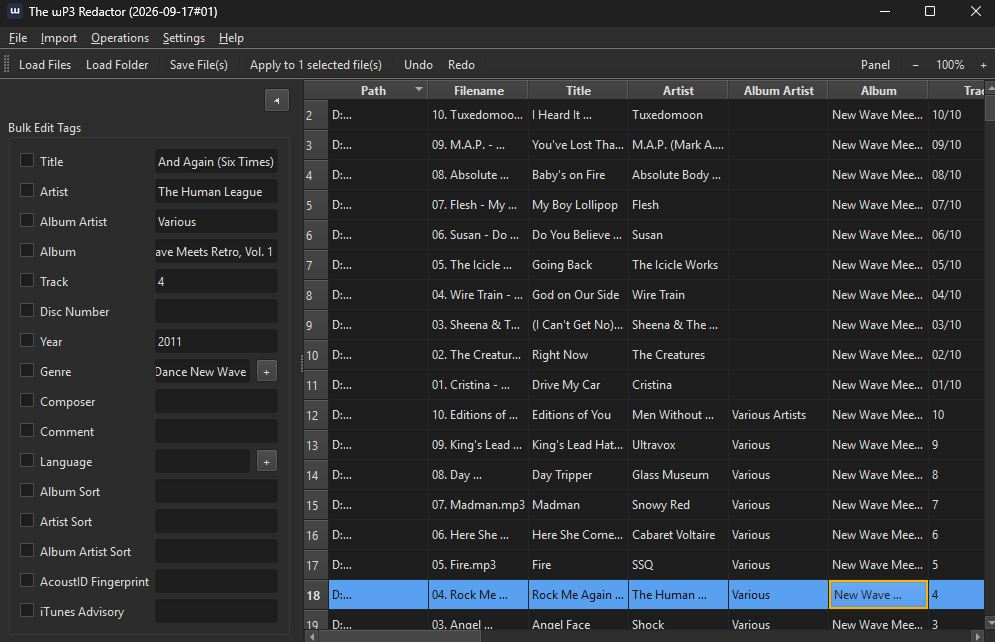

The ɯP3 Redactor
A free Windows and Linux utility for bulk-checking and bulk-editing MP3 metadata, mp3tag-inspired.

What it does
Load a folder of MP3s into a sortable table, select any number of them, and run checks or edits across the whole selection at once — the same batch-first workflow as the rest of the Redactor family.
Features
- File integrity check via
mp3val, plus a Deep Check Integrity pass that does a real full decode, catching corrupt or truncated audio a header-only scan can miss. - BPM detection (in-process, via
aubio) and musical key detection (viakeyfinder-cli, run concurrently across files for a large speedup on multi-core machines). - Bulk tag editing — Title/Artist/Album Artist/Album/Track/Disc/Year/Genre/Composer/Comment/Language via a tag panel, undoable, with Genre/Language quick-pick lists and fully manageable columns.
- Cover art — a Cover column with thumbnails and a preview in the side panel. Set a cover from an image file, or from each file's own
cover.jpg/folder.jpgso a selection spanning several albums gets each album's art at once. Remove or export covers too. Metadata > Cover > Get from MusicBrainz… and Get from Discogs… look up each folder’s release and save only its cover to the matched files (one Undo step); the Discogs lookup has a Save Cover button too. - MusicBrainz lookup — finds the release each folder belongs to (one album per folder) and matches every file to its track: title, artist, album artist, album, track, disc, year and the MusicBrainz Album/Track IDs, the way MusicBrainz Picard writes them. Other editions are offered too, and every change goes through the per-field overwrite review. With the free
fpcalctool it also identifies songs by their sound (AcoustID fingerprints), so even a folder of tagless "Track 01" files is found. - Lyrics — fetch lyrics from LRCLIB (free, no API key) for one file or a whole selection, and edit them in a dedicated lyrics editor. Saved as a standard ID3v2 lyrics frame.
- Measure Loudness — single-pass
loudnormmeasurement written as a standard ReplayGain tag, picked up by any ReplayGain-aware player. - Import & Convert to MP3 — brings FLAC/WAV/OGG/M4A and other formats into the library via
libmp3lameat a chosen bitrate. - Rename / Export / Move and Parse Filename → Metadata, pattern-based (
%track% - %artist% - %title%by default) and previewed before committing. An optional ASCII-safe filenames option turns accented letters and typographic punctuation into plain ASCII (é→e, æ→ae, ß→ss). Renames can be taken back with File > Undo Last Rename, even after a restart. - Find Duplicates (Analyze > Find Duplicates…, also in the Ctrl+K palette): compares all loaded files and opens a review window of possible duplicates — identical audio (tags ignored, so retagging never changes it), the same MusicBrainz recording, or the same artist, title and length (within 2 seconds). Each group shows how strong the match is and why; the same track on different albums is only a weak match (“probably a compilation or another release”). Duplicates are not errors in a music library, so nothing is selected or changed for you. You can reveal or open a file, select the rows in the main list, mark a group Not Duplicates (remembered across runs, even after a rename or retag), or move chosen files to the Recycle Bin after a confirmation: one file of each group must stay, and a file with unsaved edits is never moved.
- Search and Replace has a Filename column: the preview lists every old and new name, applying renames the files on disk (a taken name gets “Name (2).mp3”, nothing is overwritten) and File > Undo Last Rename takes it back.
- Preferences (Tools > Preferences…, Ctrl+,): the family’s shared Preferences dialog with four pages — Filenames (ASCII-safe filenames, zero-padding, Auto-Numbering padding), Library, Fixing (delete .bak backups after a successful fix) and Tools (where the external tools are). OK / Cancel / Apply, and Reset to Defaults for the page you are on; your stored settings are read and written exactly as before.
- Create M4B Audiobook (File menu): joins the MP3 files of a folder into one chaptered
.m4b, a chapter per file in disc / track / name order, re-encoded to AAC at 32 to 128 kbps (the MP3s are never touched). One book from a folder, or a batch with one book per folder, put beside the files or into an Audiobookshelf library asAuthor/Series/Title/Title.m4bwith an optionalmetadata.opfand cover beside it. Look Up asks Audible (then Open Library) for narrator, series and number, publisher, year, language, description and cover. An older audiobook that is replaced goes to the Recycle Bin. - Play (File > Play, Ctrl+P, a Play button on the toolbar next to Open Folder, the right-click menu, and a large Play button under the cover in the side panel): a small separate player window for the one selected file that starts playing at once, with play/pause, a seek bar and volume, to check that it plays and the tail is intact without leaving the app. It only reads the file, and the main window stays usable. Select exactly one file; the side-panel button is enabled only then.
- Opening a folder of FLAC, WAV, OGG, M4A or other audio that holds no MP3 files now says how many and which kinds, and offers to convert them to MP3 beside the originals (which are kept) and load the new files; the same bitrate question as Import & Convert follows. File > Include Subfolders (on by default, shared by all four apps) decides whether a folder, a dropped folder and Refresh List look in subfolders; a folder or file given on the command line (
mp3redactor.exe D:\Music) or dropped on the window is opened too. - Filter List (Edit > Filter List, Ctrl+F) shows only the files whose filename, title, artist, album or path contains your text; selections and Select All reach only what is shown. Edit > Auto-Number now has a Preset choice and its “Number Tracks” preset replaces the separate Metadata > Number Tracks command.
- History (Tools > History…, opt-in, off by default): once you turn it on under Tools > Preferences > History, every tag change the app writes (Save, Redact, the command line’s
set) is recorded with the old and new value, and Restore Old Values writes the old ones back, even after the app was closed. It follows a file when it is renamed or moved, keeps no covers, and Delete History sends the file to the Recycle Bin. The on/off setting is part of Export / Import Settings. - Progress for everything slow: Redact runs each file on a worker thread, and Import & Convert, the Analyze checks and Create M4B Audiobook run in the background under a progress dialog whose Cancel also stops the running conversion. Routine results go to the status bar instead of a box, and actions that do nothing now say why.
- Quick single-file rename by double-clicking a filename, without the full pattern tool.
Scripting: info, set, rename, move, convert, analyze, m4b and redact also run from the command line: see the command line guide below.
Redact, and everything since
Everything below is in the current release. Redact is the one-click path; the individual tools above remain available.
Redact steps: integrity check (mp3val) and fix what it can, BPM, key, loudness (ReplayGain), fill empty tags from the folder path, fill missing tags from MusicBrainz / AcoustID (the local MusicBrainz database first when one is set up), fill empty tags from Discogs (only when a token is stored), add a missing cover (folder image, the Cover Art Archive, or Discogs when a token is stored), and fetch missing lyrics from LRCLIB. Existing tag values are never replaced unless the recipe says so. Optional, off by default: Deep Check (slow), rename by pattern (on once you have used Rename / Export) and move into library folders. Each new file is verified (it opens, same audio length, tags read back) before it replaces the original.
- Redact: one click on the toolbar (or Edit > Redact, Ctrl+Shift+E) runs an editable recipe of steps on the selected files, or on all loaded files after asking. Each changed file is saved in place and its original goes to the Recycle Bin, so the Recycle Bin is the undo. Guesses are applied only at or above a confidence threshold (90% by default); weaker ones are listed under Needs review and never written. Files with unsaved edits or that failed to load are skipped and named in the report. A saved recipe keeps the patterns it was saved with (the editor shows a pattern trail of where each pattern comes from), so changing the Rename / Export pattern later does not silently change what Redact does.
- Move into folders: Rename / Export / Move has a third mode that files each item into a folder tree under a library root, using a pattern with
/in it. The preview shows each new path, nothing is overwritten (a taken name gets “(2)”), and File > Undo Last Rename puts everything back and offers to remove the folders the move created. - Metadata from the folder path: Parse Filename also reads folders. A pattern containing
/is matched against the file name and the folders above it, counted from your library root, with a confidence shown per file. Redact has a matching step that fills only empty fields. - Export / Import Settings (File menu): your recipe, pattern history, column layout and defaults in one JSON file for a new install or a second computer. Import shows every change before applying anything. Passwords, API keys and tokens are never included; tool paths and folders are offered unticked as “this computer only”.
- Command palette (Ctrl+K): type part of any menu command to find and run it. The menus follow one layout in all four apps: File, Edit, View, Metadata, Analyze, Tools, Help. Open in Default App is in the right-click menu, and Ctrl+Shift+A saves every changed file (Save All).
- Discogs lookup (Metadata > Look Up > Discogs, also in the right-click menu): finds the release each folder belongs to, shows its cover next to yours (and can save it to the files), lists other pressings (label, catalogue number, year, country) and sends every change through the per-field overwrite review. It needs your own free Discogs token (Tools > API Keys), stored in your operating system’s credential store, never in the settings file or a log. Publisher (label), Catalog Number and Release Country are editable fields, hidden in the table until you show them.
- Scan results stay in the file: Integrity and Deep Check results are saved inside the MP3 as ID3 frames (
REDACTOR_INTEGRITYandREDACTOR_DEEP_CHECK: the result and a UTC timestamp), written when you Save, so the record survives copying. The columns showOK · date time; files never scanned still say UNCHECKED. - A failed tool is not a bad file: if mp3val or ffmpeg times out, crashes or cannot start, the status is TOOL ERROR (shown in orange), nothing is stamped and nothing is “fixed”. The same goes for BPM, key, loudness, the format probe and the lyrics fetch: a failure shows as TOOL ERROR with the reason in the tooltip and is never written to a tag, while genuine results such as “no tempo found” stay as they were.
- A failed lyrics fetch no longer wipes lyrics: when Look Up > Lyrics finds nothing, or the search fails (for example offline), a file’s existing lyrics are left alone. Previously they were blanked in memory and the next Save removed the lyrics tag.
- Search and Replace (Ctrl+H) and Change Case work on the selected files in memory (Undo reverts, Save writes), and Remove from List drops files from the list without touching them on disk.
- Saving no longer damages tags: only the fields you changed are rewritten, multi-valued frames are kept, the file’s ID3v2.3 or v2.4 version is kept, and the write goes through a temporary copy that replaces the file.
- Progress box fix: a “Scanning…” (or similar) progress box could stay on screen for good after its work had finished, when the work took about a third of a second or more. It now closes together with its work.
Where the metadata comes from
The ɯP3 Redactor works on its own: tag editing, integrity checks, BPM, key and loudness need no outside source. Lookups are optional and every one is a review step. Online sources are only asked when you run a lookup. The local database is built from a file you download; the app never bundles or downloads it. Redact asks the local MusicBrainz database first when one is set up, then online MusicBrainz and AcoustID only for what is still missing, then Discogs when a token is stored. It fills empty tags only, and matches below the confidence threshold (90% by default) are listed under Needs review and not written. The hub has all four apps side by side.
Online sources
| Source | What it provides | What you need | Notes |
|---|---|---|---|
| MusicBrainz | The release each folder belongs to, with every file matched to its track: title, artist, album artist, album, track, disc, year and the MusicBrainz Album / Track IDs. Other editions are offered too. | Nothing: no key or account. | Asked at most once a second, as MusicBrainz’s terms ask. Metadata > Look Up > MusicBrainz. |
| AcoustID | Identifies a song by its sound: the file is fingerprinted and matched to MusicBrainz recordings, so files with useless tags and names can still be found. | The free Chromaprint tool fpcalc installed on your computer (download from acoustid.org; found on your PATH or located in Tools > External Tools, which links to it; never bundled). No key from you: the app carries its own AcoustID application key. |
Part of the MusicBrainz lookup; without fpcalc the lookup works from tags and folder names alone. Asked at most 3 times a second. |
| Discogs | Title, artist, album artist, album, track, year, genre (Discogs genres plus styles; styles can be switched off), label, catalogue number and country; the release’s cover is shown beside yours, can be saved to the files (also from Metadata > Cover > Get from Discogs, and by Redact’s cover step), and other pressings are listed. | Your own free Discogs token (create one at discogs.com under Settings > Developers). You register for it yourself; it is stored in your operating system’s credential store. | Metadata > Look Up > Discogs. Asked about once a second; if Discogs answers “too many requests” the lookup stops. |
| Cover Art Archive | The release’s front cover: shown next to your own in the MusicBrainz lookup, saved by Metadata > Cover > Get from MusicBrainz, and used by Redact’s cover step to add a missing cover (it needs the file’s MusicBrainz Album Id tag). | Nothing: no key or account. | The cover step can be told not to ask it. |
| LRCLIB lyrics | Plain song lyrics (not time-synced), found from artist and title, written to the file’s lyrics frame. | Nothing: no key or account. | Fetched through the lyricy library, for one file or a selection, or by Redact’s Fetch lyrics step (an existing lyrics tag is kept unless you tick Replace). |
Local (offline) sources
| Source | What it provides | What you need | Notes |
|---|---|---|---|
| MusicBrainz core-data dump | The same album lookup, answered instantly with no network and no one-request-a-second wait: title, artist, album artist, album, track, disc, year, MusicBrainz IDs, and also publisher (the label), catalogue number and release country. No genre and no cover. | You download mbdump.tar.bz2 yourself from musicbrainz.org (about 7 GB; it does not need unpacking) and build the database in Tools > MusicBrainz Database. Build options include official releases only and which release types to keep; Cancel is safe. |
About 5–6 GB stays on disk and a default build needs roughly 12 GB free while it runs (estimates). Metadata > Look Up > MusicBrainz (Local Database), in the same review dialog as the online lookup. Only MusicBrainz’s CC0 core data is read, never its derived data such as tags and genres. AcoustID is still online and is skipped when offline. |
From the file itself
- The file’s own tags: a MusicBrainz Album Id or Track Id tag identifies the exact release, and the Artist, Album and Year tags drive the text searches.
- The filename and the folder path: Parse Filename reads fields from a pattern such as
%albumartist%/%album%/%track% - %title%, and Redact has a matching step that fills only empty tags. An “Artist - Album (Year)” folder name also works as a search. - A folder image:
cover.jpg,folder.jpgorfront.jpgnext to the files becomes the embedded cover (Set from Folder Image, or Redact’s cover step).
Data from Discogs. This application uses Discogs’ API but is not affiliated with, sponsored or endorsed by Discogs.
Licences and required acknowledgements for these sources are collected under Data and licences on the hub.
Command line
The ɯP3 Redactor can be driven from a terminal, a batch file or Task Scheduler. It is the same program: there is no second download. mp3redactor.exe with a command name as its first argument runs that command and never opens a window; with no arguments, or with a file or folder, it opens the window as before. The commands use the same code as the window, so they give the same results, and not every window function has a command: these are the ones meant for scripting.
| Command | What it does |
|---|---|
info | Show each file's length, bitrate, cover and tags. |
set | Set or clear ID3 tags (-s Artist=Queen -s Track=3, --clear Comment) and save in place. |
rename | Rename from the tags with a pattern such as %track% - %artist% - %title%. |
move | Move or copy into a folder tree under your library root, %albumartist%/%album%/%track% - %title%. |
convert | Turn FLAC, WAV, OGG, M4A and the other formats into MP3 with ffmpeg. |
analyze | Integrity check, full decode, BPM, key and loudness, the same checks as the Analyze menu; nothing is written unless --save. |
m4b | Make one chaptered .m4b audiobook per folder of MP3 files, one chapter per file; --library writes Audiobookshelf's layout, --lookup fills in what is missing from Audible. |
redact | Run the same Redact recipe as the window: integrity, BPM, key, loudness, tags from the path, MusicBrainz and Discogs lookups, cover, rename, move. |
mp3redactor info "D:\Music\Queen" --all
mp3redactor set "D:\Music\Queen" -s AlbumArtist=Queen -n
mp3redactor rename "D:\Music\Queen" -p "%track% - %title%" --zero-pad 2 -n
mp3redactor analyze "D:\Music" --deep --bpm --save --json -o report.json
mp3redactor convert "D:\Rips" --bitrate 256 --trash-original
mp3redactor m4b "D:\Audiobooks" --library "D:\Library" --lookup --sidecarEvery command takes files, folders (searched recursively; -R for the top level only) or wildcards. Every command that changes files has -n / --dry-run to preview the result first. --json prints one JSON document instead of text, -o FILE writes the result to a file, and -q silences progress. The exit code says how it went: 0 done, 1 some files failed, 2 bad arguments, 70 an internal error, 130 interrupted.
- Nothing is overwritten: a taken name gets
(2),(3), and a file the pattern gives no name for is skipped, not called “untitled”. A mistyped%token%is refused instead of silently rendering as nothing. - Nothing is deleted for good: an original replaced by Redact or a conversion goes to the Recycle Bin, or to the folder you give with
--trash-dir, for a machine that has none. - No undo: unlike the window, the command line is not recorded in the app's rename log. Preview with
--dry-run. - Your settings apply: the saved Redact recipe, library root, offline databases, and the zero-pad and ASCII choices from the Rename window are what the commands use, unless a flag says otherwise (
--recipe FILE,--root,--zero-pad,--ascii).
m4b never touches the MP3 files. Anything a run would replace (an older audiobook, metadata.opf, a cover image) goes to the Recycle Bin, or to the folder you give with --trash-dir. A Discogs token is read from the DISCOGS_TOKEN environment variable if it is set, else from the app's saved one.
Using it from scripts (Windows)
The Windows program is a windowed one, so an interactive shell does not wait for it. For automation ask for the result in a file, wait for the process, and read the exit code:
mp3redactor.exe analyze "D:\Music" --deep --json --output "%TEMP%\check.json"
if errorlevel 1 echo something failed
start /wait mp3redactor.exe redact "D:\Incoming" --quiet
# PowerShell
$p = Start-Process mp3redactor.exe -ArgumentList 'redact','D:\Incoming','--json','-o','C:\Temp\redact.json' -Wait -PassThru
$p.ExitCodeIn a batch file write %% for each % of a pattern (-p "%%series%% %%title%%"), as cmd expands a single %name% itself. On Linux the program behaves like any command-line tool. The full reference, with every option and JSON field, is in the repository README.
Requirements
Two downloads on each release: a standalone .exe for Windows, and mp3redactor-linux-x86_64.tar.gz for 64-bit Linux (Ubuntu 22.04+, Debian 12+, Fedora 36+, Mint 21+ and the like — unpack and run; settings live in ~/.config/mp3redactor/). No separate Python install needed on either. On Linux, Detect BPM falls back to having ffmpeg decode the MP3 to a temporary WAV when aubio cannot open it directly; without ffmpeg it reports a TOOL ERROR. Deep integrity checks, loudness measurement, and format conversion use ffmpeg; key detection uses keyfinder-cli — on Windows a small companion binary from keyfinder-cli-windows (no prebuilt Windows build exists upstream, so it's built and shipped separately), on Linux the upstream keyfinder-cli on your PATH. The app never downloads or bundles these tools; point it at them with Tools > External Tools... if they aren't on PATH. Full details and the changelog are in the GitHub repository.
The rest of the family
The ɯP3 Redactor shares its UI and core editing patterns with three sibling tools, via redactor_common: